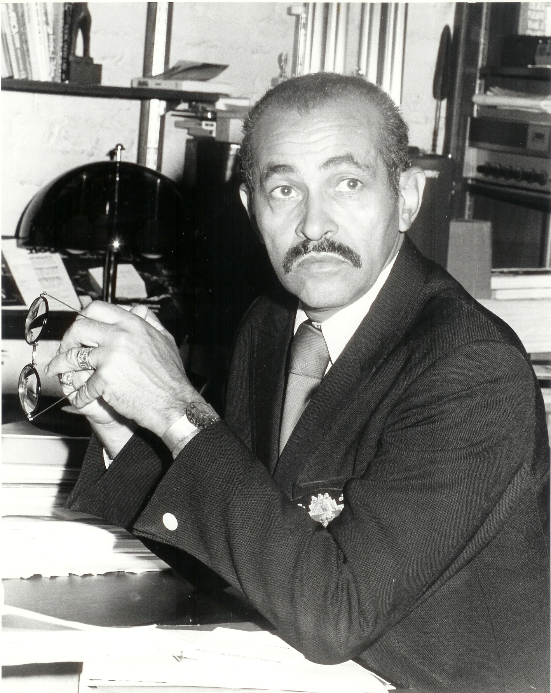
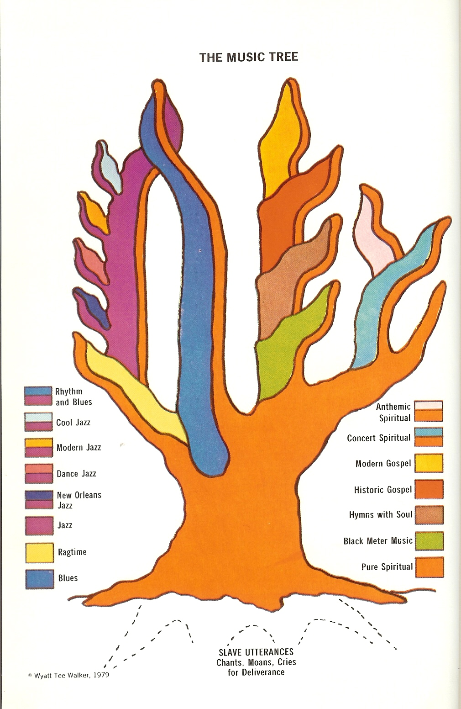

Photos shown here are just some of the photos I’ve taken or those given to me by Dr. Walker from his personal collection. Others are file photos in the public domain, or, as noted.
Do you have any photos of Rev. Dr. Walker that you’d like to possibly see included on this site? If so, click here.

Wyatt Tee Walker. Personal collection. (Photo given to me by WTW, 1981.)
Wyatt Tee Walker. Personal collection. (Photo given to me by WTW, 1981.)
Dr. Walker's first major publication (Judson Press, 1979). Personal collection.

Walker's noted "Music Tree," in Somebody's Calling My Name. Judson Press, 1974. (Click for larger image).
Ambassador Andy Young and the Walkers on tour, c.1983. (Personal collection.)
WTW loves photography. c.1983. (Personal collection.)

Wyatt Tee Walker at New York Theological Seminary. File photo. c.1974. Personal collection.
WTW at Canaan Baptist Church. File photo (Walter Mayo), c.1974
Canaan Baptist Church, Harlem N.Y.

WTW at 31st. St. Baptist Church, Richmond, VA. 1995. (Alexa Welch)
WTW looks on at President Clinton
Rev. Walker's mug shot, Birmingham, AL, 1961. (TheSmokingGun.com.)
“My father was what we called a ‘race‘ man. He reacted to anything that smacked of discrimination or prejudice.”
—Times-Dispatch, Nov. 11, 2007.
“Rosa Parks’ death and Mrs. King’s death signaled to me that our generation is passing—what I think was the greatest generation America has produced. Time is catching up with us.”
—Virginia Commonwealth University (VCU), Feb. 2006.
“The generation of which I’ve been a part has been influenced by ideas rather than things. Dr. King died a poor man. And this generation has been seduced by ‘bling bling’ and big cars and money and power, rather than ideas.”
—VCU, Feb. 2006.
“You disrespected me, my pulpit and my people…Your addiction to the need of media attention seems to be fatal and you have fallen into the practice of using people for your advantage and personal aggrandizement.”
—Written to Rev. Jesse Jackson, Feb. 1, 2001, after Walker allowed Jackson to use Canaan’s chapel to apologize for his extramarital affair (and child), but Jackson didn’t apologize, but made a political speech instead.
“Next year, we may be celebrating the first president of African descent in this nation, which will not be our victory so much as America’s victory.”
—referring to presidential candidate Sen. Barack Obama, Jan. 2008, Richmond’s 30th Annual Community Leaders Breakfast.